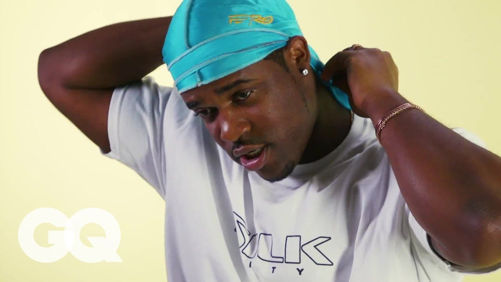

Your First Durag Tie: A Beginner's Walkthrough With Zero Guesswork
Nobody ties a durag perfectly the first time — but you can tie it correctly the first time, and that is what matters. This walkthrough assumes you have never worn one: what to look for in a first durag, how it should sit and feel, and the tie itself in plain steps. For a visual reference, the GQ segment below has A$AP Ferg breaking down the tie on camera — proof that the fundamentals are the same whether it is your first durag or your five hundredth.
Picking your first durag
Start with a silky durag — the smooth, shiny style you see most often. Silky fabric is forgiving for beginners: it slides into place easily, shows you clearly when it is wrinkled, and works for both wave training and everyday wear. You want long tails (they make tying dramatically easier while you are learning) and stitching that looks even when you gently stretch the fabric.
Avoid ultra-cheap durags with paper-thin fabric and crooked seams. They tear at the tail, stretch out within a week, and the seam down the middle is often raised — which prints a line into your hair. One decent durag you tie well beats five bargain ones you fight with every night.
How it should sit and feel
Put it on seam-out, front edge just above your eyebrows, cape hanging down your back. Before you touch the tails, get this picture in your head: the durag should look like a smooth swim cap with fabric to spare at the back. It should feel snug when tied — a steady, even pressure — but never painful, and it should never leave deep red marks on your skin.
If the front edge covers your eyebrows or slides down over them, it is sitting too low. If it rides up toward your hairline within a minute, it is too high or the tails are pulling unevenly. Adjust the front edge first, then tie — in that order, every time.
The tie, in four plain moves
One: tails back, flat and smooth, one in each hand. Two: cross them behind your head. Three: bring them forward and cross once at the front, low on the durag's edge. Four: take them back and tie a small, flat knot at the back, then pull the cape down over it. That is the whole tie — the same one detailed fully in our standard tie guide.
Practice it three times in a row in front of a mirror on day one. By the third attempt your hands will already know the route. Within a week it is a twenty-second habit you will do half-asleep — which is exactly what a nightly wave routine needs.
Watch: How to Tie a Durag, According to A$AP Ferg | GQ
Video: “How to Tie a Durag, According to A$AP Ferg | GQ” by GQ (@GQVideos) · Watch on YouTube
Shop the gear
Everything in this guide runs on the right gear: a durag that holds compression without slipping, a cap that stays put, and fabric that treats your hair right. The durag.store launch lineup is built to that standard — dual-layer construction, long tails, and stitching made to survive the routine. Join the launch list and use code GOLDSTANDARD for 15% off your first order.
Keep learning
- How to Tie a Durag for 360 Waves: The Standard Tie, Step by Step — Basic · Tying & Basics
- The No-Knot Durag Method: Full Compression, Zero Forehead Lines — Intermediate · Tying & Basics
- How to Wear a Durag All Day Without It Slipping, Sliding or Looking Sloppy — Basic · Tying & Basics
Sources: Video — “How to Tie a Durag, According to A$AP Ferg | GQ” by GQ (@GQVideos), youtube.com. Guide written by the durag.store Wave Lab.